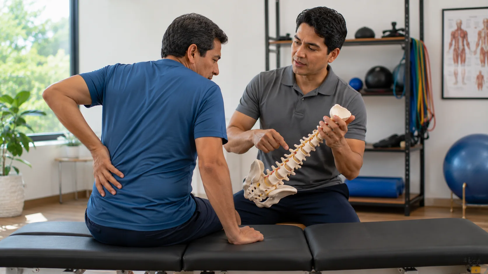
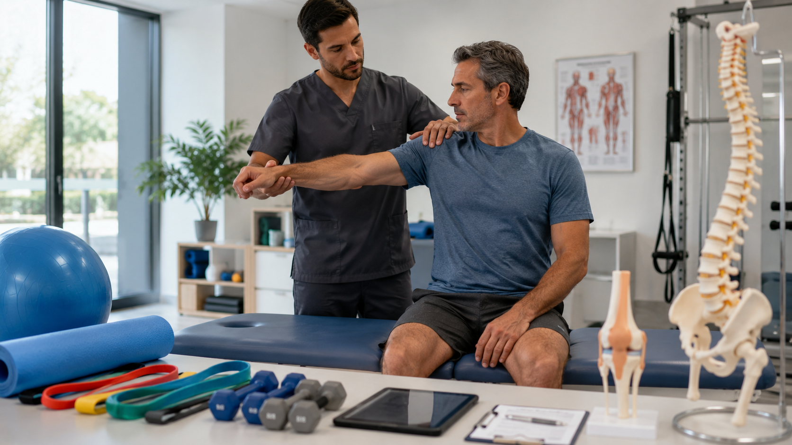

01
Corazón y circulación
El movimiento regular apoya la capacidad cardiovascular y la realización de actividades cotidianas.
Actividad física
La actividad física incluye todo movimiento corporal que requiere energía. Caminar, desplazarse, jugar, trabajar, bailar o entrenar pueden formar parte de una vida más activa.

Conceptos esenciales
Es cualquier movimiento producido por los músculos que aumenta el gasto de energía. Incluye actividades cotidianas, recreativas, laborales, de transporte y ejercicios planificados.
Lo más importante
Caminar, fortalecer, estirar y reducir pausas largas puede integrarse de forma progresiva, sin convertir el cuidado en una exigencia extrema.
Bienestar integral
La actividad física regular se relaciona con beneficios físicos, mentales y sociales. Incluso cantidades moderadas de movimiento pueden ser valiosas cuando se mantienen en el tiempo.
El movimiento regular apoya la capacidad cardiovascular y la realización de actividades cotidianas.
Las actividades de fuerza y soporte de peso contribuyen a conservar función muscular y salud ósea.
Moverse puede favorecer el bienestar emocional, reducir tensión y ofrecer espacios de disfrute.
Una rutina activa puede apoyar la calidad del descanso y la sensación de vitalidad durante el día.
La fuerza, la movilidad y el equilibrio ayudan a sostener tareas y desplazamientos habituales.
Las actividades compartidas crean oportunidades para relacionarse, participar y mantener motivación.
Vida activa
Ser una persona activa no depende únicamente de practicar un deporte. Pequeñas decisiones distribuidas durante el día pueden reducir el tiempo sentado y aumentar el movimiento total.
Caminar parte del trayecto o desplazarse en bicicleta cuando el entorno sea apropiado suma movimiento.
Levantarse, estirarse o caminar brevemente ayuda a interrumpir periodos prolongados de quietud.
Limpiar, ordenar, cocinar o cuidar plantas pueden formar parte de una rutina físicamente activa.
Elegir recorridos un poco más largos o usar escaleras puede añadir actividad de manera práctica.
Bailar, jugar o pasear combina movimiento con disfrute y participación social.
Observar cuánto tiempo se pasa sentado y qué momentos permiten moverse ayuda a identificar oportunidades.
Capacidad funcional
La fuerza permite levantarse, cargar objetos y realizar tareas habituales. La movilidad combina movimiento articular, control y capacidad para desplazarse con seguridad.
Las rutinas pueden involucrar piernas, espalda, pecho, abdomen, hombros y brazos.
Sentarse y levantarse, empujar una pared o subir escalones son ejemplos de movimientos funcionales.
Bandas, máquinas o cargas pueden utilizarse con técnica adecuada y progresión gradual.
La calidad, la postura y una ejecución cómoda son más importantes que avanzar rápidamente.
Alternar esfuerzo y descanso permite que el cuerpo se adapte a la actividad realizada.
Una evaluación puede ayudar cuando existen limitaciónes, dolor persistente o dudas sobre cómo comenzar.
Estabilidad
La flexibilidad facilita la amplitud de movimiento y el equilibrio ayuda a controlar la posición corporal. Ambas capacidades apoyan actividades como vestirse, alcanzar objetos y caminar.
Menos tiempo sentado
El comportamiento sedentario incluye periodos prolongados sentados o reclinados con poco gasto de energía. Puede coexistir con el ejercicio, por eso también importa interrumpir la quietud diaria.
Trabajar, viajar o usar pantallas durante muchas horas puede concentrar demasiado tiempo sentado.
Levantarse con regularidad y cambiar de posición suma actividad sin exigir una sesión formal.
Alarmas suaves, llamadas de pie o una botella de agua distante pueden invitar a moverse.
Alternar televisión o lectura con caminatas y tareas ligeras disminuye bloques largos de quietud.
Organizar el espacio para permitir cambios de postura ayuda a sostener hábitos más activos.
Reducir poco a poco el tiempo sedentario puede resultar más viable que intentar modificar toda la rutina.
Envejecimiento activo
La actividad física puede adaptarse a distintas capacidades y niveles de experiencia. En adultos mayores, combinar movimiento aeróbico, fuerza y equilibrio favorece la autonomía y participación.
Cualquier aumento posible de movimiento puede ser valioso, incluso con sesiones cortas.
Levantarse, caminar, alcanzar y cargar son capacidades relacionadas con la independencia cotidiana.
El entrenamiento adaptado puede mejorar estabilidad y confianza durante los desplazamientos.
Ayudas técnicas y supervisión pueden facilitar una participación segura sin restar valor al movimiento.
Caminar en compañía, bailar o participar en grupos favorece continuidad y conexión social.
Profesionales de salud pueden orientar adaptaciones cuando existen enfermedades, caídas o limitaciónes funcionales.
Práctica segura
Estas señales no establecen un diagnóstico. Es importante detener la actividad y solicitar atención cuando aparece un malestar intenso, inesperado o preocupante.
Una molestia intensa o inesperada en pecho, brazos, espalda, cuello o mandíbula requiere atención inmediata.
La falta de aire desproporcionada, súbita o que no mejora al detenerse merece evaluación.
La pérdida de equilibrio, visión borrosa, confusión o desmayo son motivos para interrumpir el esfuerzo.
Un ritmo cardíaco inusual acompañado de dolor, mareo o debilidad requiere orientación profesional.
El dolor intenso en músculos o articulaciones no debe confundirse con el esfuerzo habitual.
Confusión, piel muy caliente, debilidad intensa o náuseas durante el calor requieren acción rápida.
Artículos destacados
Doce contenidos educativos para comprender el movimiento, revisar hábitos y avanzar de forma gradual y segura.
Diferencias útiles para reconocer todas las formas de movimiento que cuentan.
Una guía gradual para transformar intención en una rutina posible.
Traslados, tareas y pausas activas que suman durante el día.
El papel de la fuerza en la postura, la autonomía y las tareas habituales.
Ideas para cuidar la amplitud y el control de los movimientos cotidianos.
Cómo practicar equilibrio con apoyos y un entorno organizado.
Estrategias sencillas para distribuir más movimiento a lo largo del día.
Cómo combinar actividades agradables con responsabilidades y descanso.
Herramientas para retomar el movimiento después de pausas o cambios de rutina.
Actividades adaptables que apoyan fuerza, estabilidad y participación.
Espacio, hidratación, clima y elementos básicos para una práctica más segura.
Señales que justifican interrumpir el esfuerzo y solicitar orientación.
Registrar patrones cotidianos ayuda a convertir dudas generales en conversaciones más claras.
Si algo se repite, empeora o limita tu rutina, conviene buscar orientación profesional.
Estos contenidos orientan y educan; no sustituyen una evaluación individual.
Preguntas frecuentes
No. Caminar, desplazarse, realizar tareas y practicar actividades recreativas también forman parte de la actividad física.
No necesariamente. El movimiento puede distribuirse en distintos momentos del día según las posibilidades personales.
El esfuerzo puede generar respiración más rápida y fatiga muscular temporal. El dolor agudo, intenso o inesperado es una señal para detenerse.
En muchas situaciones es posible comenzar gradualmente. Si existen condiciones de salud, síntomas o dudas específicas, conviene solicitar orientación profesional.
La fuerza puede trabajarse con ejercicios adaptados, progresión y apoyos adecuados. Una orientación profesional puede ayudar a definir opciones seguras.
La que puede realizarse con seguridad, resulta agradable y se integra de manera sostenible a la vida cotidiana.
Consejos prácticos en casa
Estas recomendaciones son educativas y no reemplazan una evaluación individual. Las necesidades y adaptaciones dependen de la capacidad, experiencia y estado general de cada persona.
Elige una actividad concreta y un tiempo que puedas sostener dentro de tu rutina.
Modifica duración, frecuencia o intensidad poco a poco para facilitar la adaptación.
Integra movimiento aeróbico, fuerza, movilidad y equilibrio según tus posibilidades.
Considera espacio, calzado, hidratación, clima y visibilidad antes de comenzar.
Reduce o detén el esfuerzo ante síntomas inesperados y busca ayuda cuando sea necesario.
La compañía y la orientación profesional pueden aportar confianza, seguridad y continuidad.
Qué debes recordar
Detenerse ante dolor de pecho, falta de aire marcada, desmayo o síntomas intensos es parte del autocuidado responsable.
Fuentes científicas
El contenido tiene fines educativos generales y se basa en recursos institucionales de salud pública y promoción del movimiento.
También te puede interesar
Explora síntomas, enfermedades, medicamentos y recursos educativos conectados con este tema.

Síntoma relacionadoDolor muscularGuia informativa sobre molestias musculares y señales de cuidado.

Síntoma relacionadoDolor articularInformación para entender dolor en articulaciones y limitación funcional.
 Síntoma relacionadoDolor de pecho
Síntoma relacionadoDolor de pechoSeñal que requiere atención cuidadosa, especialmente si se acompaña de falta de aire.
 Enfermedad relacionadaObesidad
Enfermedad relacionadaObesidadContenido educativo sobre peso, hábitos y salud metabolica.
 Recurso educativoSueño
Recurso educativoSueñoDescanso, energía y recuperación como parte del autocuidado.
 Recurso educativoEnvejecimiento saludable
Recurso educativoEnvejecimiento saludableAutonomía, movilidad y seguridad en personas mayores.

Soy VITA. Puedo ayudarte a comprender síntomas, enfermedades y medicamentos mediante orientación médica informativa basada en evidencia científica.
Contenido orientativo sobre movimiento y prevención. Detén la actividad y busca ayuda ante señales de alarma. Revisa el criterio editorial y las referencias generales en Fuentes IDB.